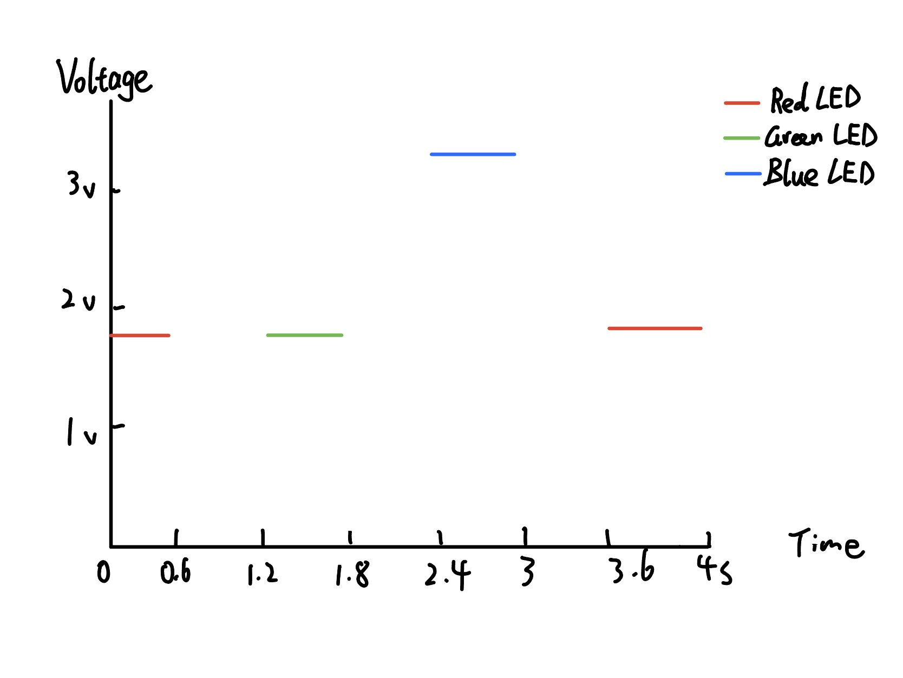

Circuit:

Here is my circuit, as the calculation showed above we can see that the resistance for red and green LED is 160 ohms and for blue LED is 85 ohms, so I picked two 220 ohms resistors and one 100 ohms resistor.
Here is all the documentation for assignment 1!
This is the schematic for my 3 LEDs connected to the Arduino, and the calculation for each resistance.
Here is my circuit, as the calculation showed above we can see that the resistance for red and green LED is 160 ohms and for blue LED is 85 ohms, so I picked two 220 ohms resistors and one 100 ohms resistor.
int RED_LED = 11; // create an variable name for pin 11 called RED_LED
int GREEN_LED = 12; // create an variable name for pin 12 called GREEN_LED
int BLUE_LED = 13; // create an variable name for pin 13 called BLUE_LED
void setup() {
pinMode(RED_LED, OUTPUT); // initialize digital pin RED_LED as an output.
pinMode(GREEN_LED, OUTPUT); // initialize digital pin GREEN_LED as an output.
pinMode(BLUE_LED, OUTPUT); // initialize digital pin BLUE_LED as an output.
}
void loop() {
digitalWrite(RED_LED, HIGH); // turn the RED LED on
digitalWrite(GREEN_LED, LOW); // keep the GREEN LED off by making the voltage LOW
digitalWrite(BLUE_LED, LOW); // keep the BLUE LED off by making the voltage LOW
delay(600); // wait for 0.6 second
digitalWrite(RED_LED, LOW); // turn the RED LED off by making the voltage LOW
digitalWrite(GREEN_LED, HIGH); // turn the GREEN LED on
digitalWrite(BLUE_LED, LOW); // keep the BLUE LED off by making the voltage LOW
delay(600); // wait for 0.6 second
digitalWrite(RED_LED, LOW); // keep the RED LED off by making the voltage LOW
digitalWrite(GREEN_LED, LOW); // turn the GREEN LED off by making the voltage LOW
digitalWrite(BLUE_LED, HIGH); // turn the BLUE LED on
delay(600); // wait for 0.6 second
}

This is my final result, with each LED flashing for 0.6 seconds.
Draw a graph where the X axis is time and the Y axis is voltage across the LEDs. Draw a line for each of your 3 LEDs.
How many LEDs could you blink independently with your Arduino? How much current would that draw?
I think I could blink 13 LEDs independently since my Arduino has 13 digital pins. I think that would draw 260 mA current.
How fast do you need to blink your LEDs until you no longer can tell that they are blinking?
It is around 0.005-0.006 seconds.